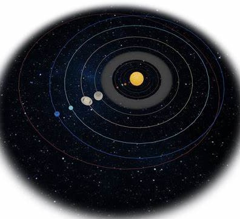

Warning: if you are using a mobile phone then you might have to zoom in to read some areas of this website
The Sun is largest menber of the solar system. It is a star and all the
planets, satalites, asteroids and comets revolve around it.
it
is about 150 million km away from the earth it produces a lot of
heat and light which is necessary for all forms of life on the earth.
Planets are large (almost) spherical objects that revolve around the stars. Planets move in a fixed orbit around the Sun.
there are 8 planets in the solar system
1. mercury
2. venus
3. earth
4. mars
5. saturn
6. jupiter
7. uranus
8. neptune
as shown in the image below

learn more about them on youtube!
Earth is the planet we live on, the earth has a atmospere that acts as a
protective layer against the suns harmful UV rays.
It is in the habitable area of the
solar system, it has water and air that are compulsary for life to exist, it has lots of
plants, right now we are ruining earth by causing global warming.
the moon is a celestial object that revolves around the earth, it causes the tides in the
ocean.
learn more about the earth and the moon on google!